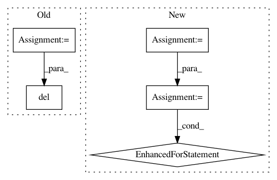

23dffb96ac95827a3af89f6ff027d254284ba93c,onmt/inputters/inputter.py,DatasetLazyIter,__iter__,#DatasetLazyIter#,528
Before Change
def __iter__(self):
paths = cycle(self._paths) if self.is_train else self._paths
for path in paths:
cur_dataset = torch.load(path)
logger.info("Loading dataset from %s, number of examples: %d" %
(path, len(cur_dataset)))
cur_dataset.fields = self.fields
cur_iter = OrderedIterator(
dataset=cur_dataset,
batch_size=self.batch_size,
batch_size_fn=self.batch_size_fn,
device=self.device,
train=self.is_train,
sort=False,
sort_within_batch=True,
repeat=False
)
for batch in cur_iter:
yield batch
cur_dataset.examples = None
gc.collect()
del cur_dataset
gc.collect()
def max_tok_len(new, count, sofar):
After Change
paths = self._paths
if self.is_train and self.repeat:
// Cycle through the shards indefinitely.
paths = cycle(paths)
for path in paths:
for batch in self._iter_dataset(path):
yield batch
num_batches += 1
if self.is_train and not self.repeat and \
num_batches % self.num_batches_multiple != 0:
// When the dataset is not repeated, we might need to ensure that
// the number of returned batches is the multiple of a given value.
In pattern: SUPERPATTERN
Frequency: 3
Non-data size: 5
Instances
Project Name: OpenNMT/OpenNMT-py
Commit Name: 23dffb96ac95827a3af89f6ff027d254284ba93c
Time: 2019-02-08
Author: guillaumekln@users.noreply.github.com
File Name: onmt/inputters/inputter.py
Class Name: DatasetLazyIter
Method Name: __iter__
Project Name: OpenNMT/OpenNMT-py
Commit Name: d314a48ed4a95926aece62f554cecb4544b5acd5
Time: 2019-11-12
Author: pltrdy@gmail.com
File Name: onmt/models/model_saver.py
Class Name: ModelSaverBase
Method Name: save
Project Name: OpenNMT/OpenNMT-py
Commit Name: d314a48ed4a95926aece62f554cecb4544b5acd5
Time: 2019-11-12
Author: pltrdy@gmail.com
File Name: onmt/trainer.py
Class Name: Trainer
Method Name: validate